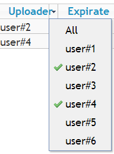

SlickGrid plugin for distinct column possible values from back-end.
SlickGrid plugin for distinct column possible values from back-end.
E.g. when you have very huge database and When you want to bring to the user a list of the different column values, this is for u :)

Features:
var columns = [..]
var grid = ..
...
var headerMenuPlugin = new Slick.Plugins.HeaderMenu();
grid.registerPlugin(headerMenuPlugin);
var distinctMenuPlugin = new Slick.Plugins.DistinctMenu(
{ headerMenu: headerMenuPlugin,
columns: columns,
exclude: ['title', 'description'], //columns id which is not used while distinct valuse
url: '/items',
doFilter: functino(field, condition){
//fetch new data from backend....
}
}
);
grid.registerPlugin(distinctMenuPlugin);
distinctMenuPlugin.update();
License: MIT (See more from LICENSE file)